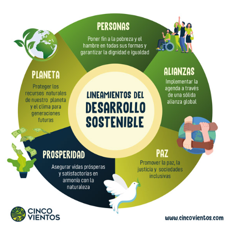

Tema 1. Desarrollo sostenible
Ir al inicio

El desarrollo sostenible consiste en satisfacer las necesidades del presente sin comprometer la capacidad de las futuras generaciones para satisfacer sus propias necesidades. Busca mantener un equilibrio entre el crecimiento económico, el bienestar social y la protección del medio ambiente.
- Principales dimensiones del desarrollo sostenible:
- Ambiental: protege los ecosistemas, conserva la biodiversidad y promueve el uso responsable de los recursos naturales.
- Social: busca mejorar la calidad de vida, reducir las desigualdades y favorecer el acceso a servicios básicos.
- Económica: impulsa actividades productivas que aprovechen los recursos de manera responsable y puedan mantenerse a largo plazo.